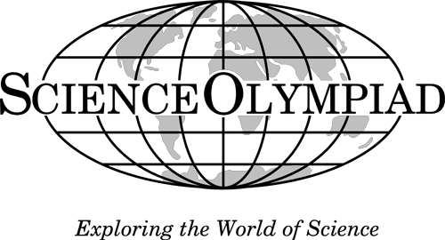

Title: Index
Date: 2018-01-16 2:04 PM
Template: index.twig
===
<section id="intro">
<div id="logo"></div>
<div>
<p>The Science Olympiad is an national science competition that features schools from all 50 states with more than 15,000 K-12 schools participating. The goal of the Science Olympiad is to increase K-12 student and teacher participation in Science, Technology, Engineering and Math (STEM). The Science Olympiad competitions feature several STEM related events at the regional, state, and national levels.</p>
<p>Parents can contact the science teachers at their children's school to join or start a team. Teachers can contact James Hill about starting and coaching a team.</p>
</div>
</section>